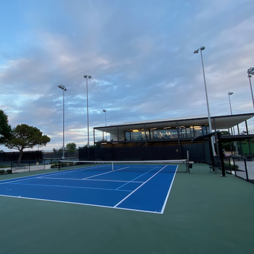

Plano has lots of Tennis courts!

High Point Tennis Center is the premier tennis facility in Plano. Court reservations, ball machine rentals, and lessons are available.
You can also play at the courts of various Plano ISD schools, as long as it isn't during school hours and the courts aren't currently being used by Plano ISD.